Meet the Team
Our work is made possible by a multidisciplinary team of researchers, students, technicians, collaborators and graduates who contribute to the scientific and extension mission of the McLab Field Pathology & Epidemiology Group.
Principal Investigator
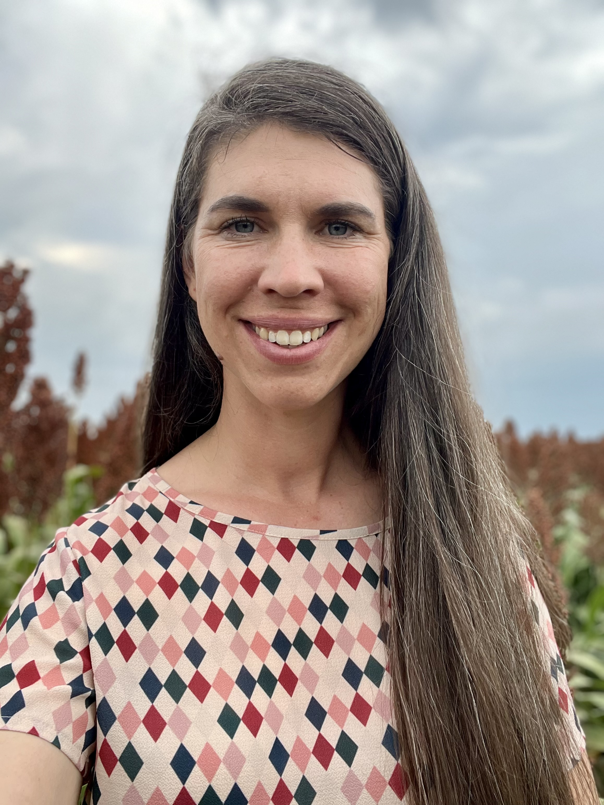
Dr Lisa Rothmann
Principal Investigator | Field Pathology & Epidemiology
More about Lisa
Dr Lisa Rothmann leads the McLab Field Pathology & Epidemiology Group at the University of the Free State. Her work focuses on plant disease epidemiology, field pathology methodologies, and applied research supporting producers and industry partners. She supervises postgraduate students, leads multi-stakeholder research programmes and collaborates nationally and internationally on Sclerotinia epidemiology, disease forecasting and sustainable crop protection.
Post-Doctoral Fellows

Dr Knowledge Mushonga
Postdoctoral Fellow
Start: 2025
More about Knowledge
Dr Knowledge Mushonga is currently a Postdoctoral Fellow contributing to novel intervention strategies for Sclerotinia, research on ergot of sorghum, and broader Sclerotinia research within the group. He also serves as a Lecturer at the National University of Science and Technology and is completing an MSc focused on Climate Change and Agriculture.
He holds a PhD in Plant Science, where he investigated the impact of crop rotation on soil and plant health in dryland production systems of the Eastern Free State. His academic background includes an MSc in Applied Microbiology and Biotechnology, examining the genetic diversity of wild Sorghum arundinaceum using molecular markers, and an Honours degree in Applied Biology and Biochemistry. His research interests span plant and soil health, genetic diversity of underutilized species, biostatistics, and plant pathology.
Research Technicians
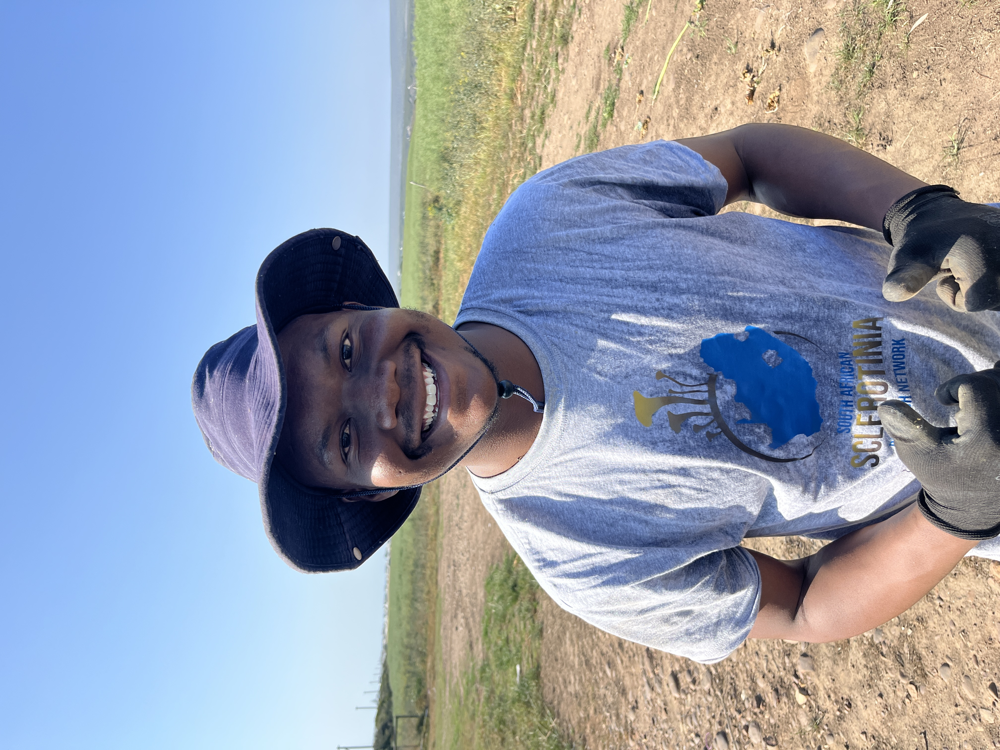
Dumolwenkosi Maposa
Research Technician
Start: 2025
More about Dumolwenkosi
Dumo Maposa is a Research Technician involved in oilseed disease surveillance, with a strong focus on sunflower and soybean systems. He supports cultivar evaluation trials and assists with fungicide and herbicide efficacy studies targeting Sclerotinia head rot in sunflower. Dumo co-coordinates the #SclerotiniaZA Research Network and works closely with producers through extension activities, contributing to the translation of research findings into practical field applications.
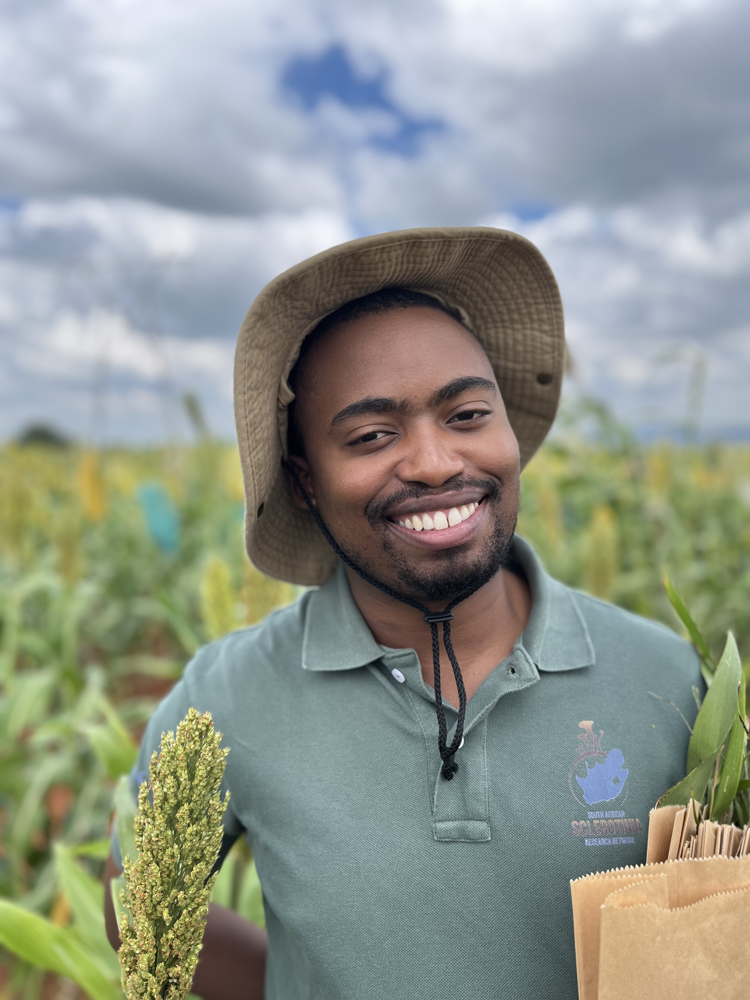
Thabiso Masisi
Research Technician
Start: 2026
More about Thabiso
Thabiso Masisi is a Research Technician contributing to soybean and sunflower disease surveys, with a focus on laboratory diagnostics and pathogen characterisation. His work supports the identification and analysis of key fungal pathogens within oilseed systems, strengthening the group’s capacity for evidence-based disease surveillance and applied research.
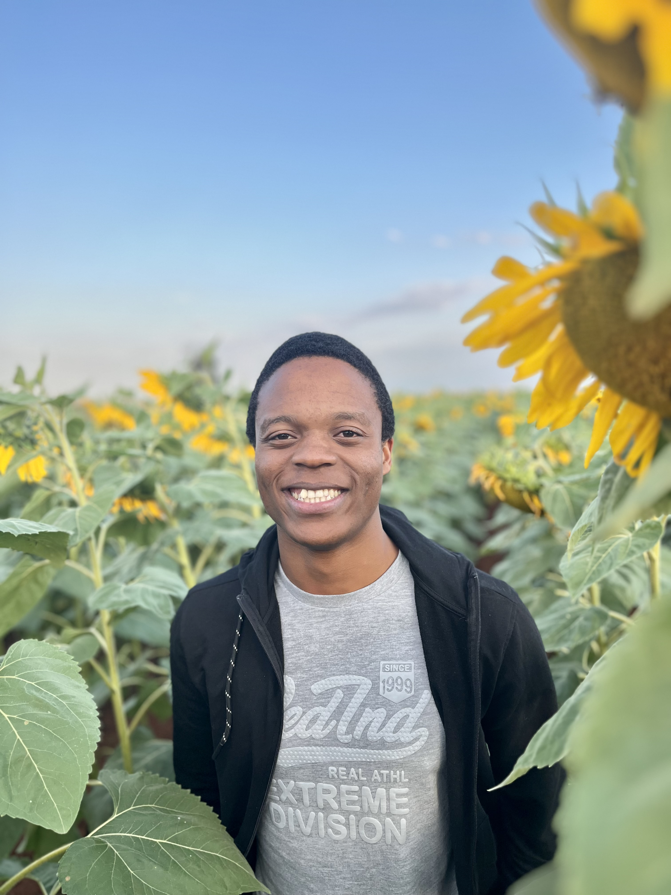
Kwanele Sabela
Research Technician
Start: 2026
More about Kwanele
Kwanele Sabela is a Research Technician with a primary focus on Sclerotinia cultivar evaluation in soybean and sunflower systems. He contributes to fungicide and herbicide efficacy trials targeting Sclerotinia head rot and is actively involved in oilseed disease surveillance initiatives. Kwanele also co-coordinates the #SclerotiniaZA Research Network, contributing to collaborative research efforts and the translation of science into practical value for society.

Nomvula Moloi
Research Technician
Start: 2026
More about Nomvula
Nomvula Moloi is a Research Technician supporting soybean and sunflower disease surveys, with a primary focus on laboratory-based diagnostics. She contributes to the identification and characterization of pathogens, including Cercospora species associated with soybean and fungal communities linked to uChokwane (tepary bean). Nomvula also plays a key role in maintaining the laboratory culture collection, overseeing inventory management, and supporting general laboratory operations to ensure research continuity and quality control.
PhD Candidates
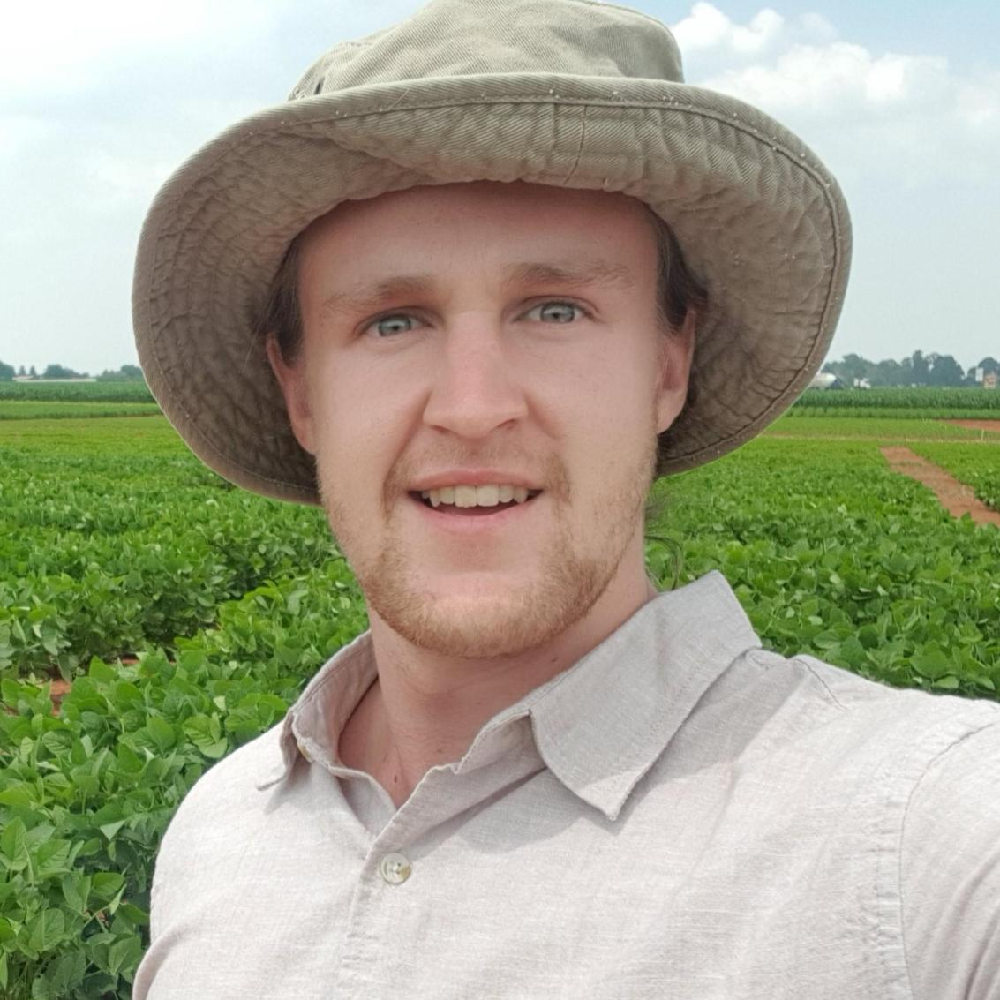
Alec Edwards
PhD Candidate | UFS
Co-supervisor
Start: 2022
More about Alec
Alec is currently completing a PhD in Plant Health Ecology at the University of the Free State, where his research focuses on enhancing sustainable soybean production through plant growth-promoting bacteria and biological control strategies for the management of Sclerotinia sclerotiorum. He serves as an Applied Science Manager at Afrikelp, leading local and international field trials on seaweed-based biostimulants and investigating their biochemical and physiological mechanisms to optimise plant growth, nutrient uptake, and stress resilience.
Thabiso Masisi
PhD Candidate | UFS
Primary supervisor
Start: 2022
More about Thabiso
Thabiso Masisi is a plant pathologist and PhD researcher in the McLab Field Pathology & Epidemiology Group, specialising in the epidemiology of fungal diseases affecting sorghum in South Africa. His research focuses on large-scale field disease surveillance across major sorghum-producing regions, with an emphasis on understanding disease distribution, incidence, and severity under different agro-ecological conditions. His work integrates field-based disease assessments, laboratory diagnostics, and molecular identification of fungal pathogens, alongside statistical and spatial data analysis. Through this approach, he aims to generate evidence that supports disease risk assessment, informs management strategies, and strengthens the translation of epidemiological research into practical tools for farmers and stakeholders.
Project Title: Incidence, management and producer perceptions of fungal diseases in sorghum cropping systems
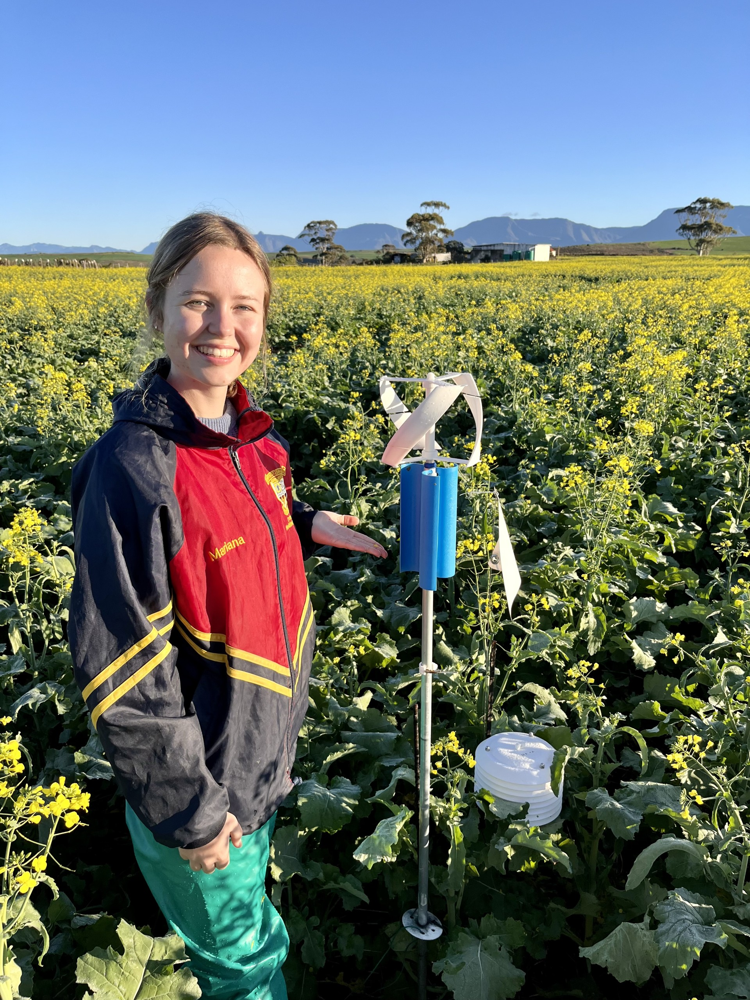
Mariana van Deventer
PhD Candidate | Stellenbosch University
Co-supervisor
Start: 2023
More about Mariana
Mariana van Deventer is a postgraduate student in the Plant Pathology Department at the University of Stellenbosch. Her research focuses on Sclerotinia stem rot development on canola and chemical control, with particular emphasis on Sclerotinia sclerotiorum epidemiology and disease risk prediction. She evaluates fungicide deposition and efficacy, monitors disease development in the field with molecular diagnostics, uses custom-made spore samplers to detect airborne spores, records micro- and macroclimate data from field locations in the Western Cape, and analyses the data using R software, aiming to develop a risk prediction model for canola stem rot, that would potentially equip local producers with a tool to enhance their decision-making process regarding economic fungicide application.
Project Title: Modelling the risk of Sclerotinia stem rot of canola in the Western Cape of South Africa for improved chemical control
Kwanele Sabela
PhD Candidate | UFS
Start: 2026
More about Kwanele
Kwanele Sabela is a Plant pathologist and newly doctoral candidate. More will be uploaded soon - watch this space.
MSc & MSc Agric Candidates
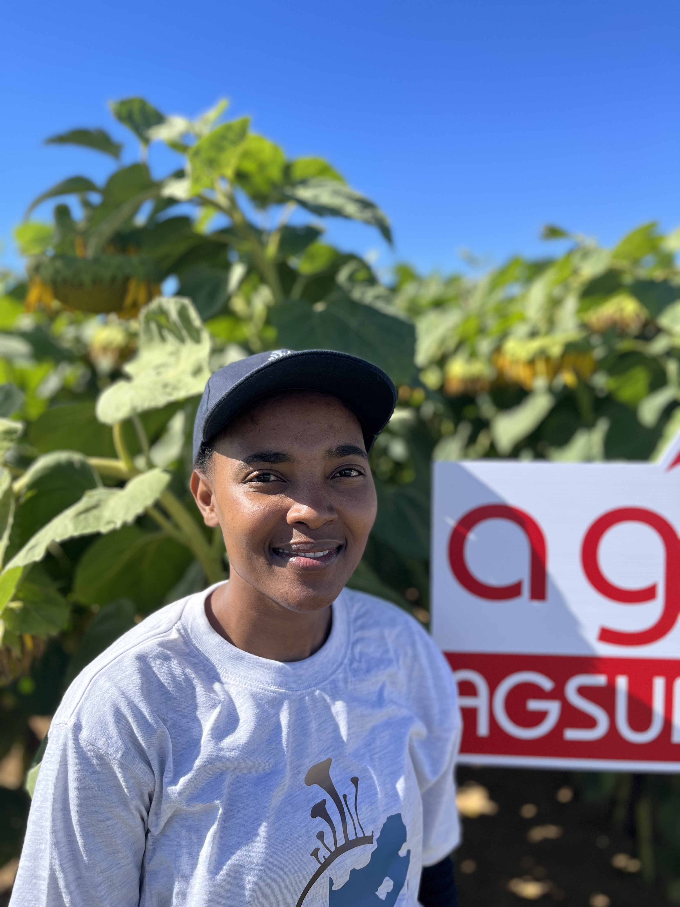
Diana Mngomezulu
MSc Candidate | UFS
Co-supervisor
Start: 2022
More about Diana
Diana is currently completing her MSc in Plant Breeding at the University of the Free State, co-supervised by Dr Rothmann, with a research focus on resistance to Fusarium head blight in wheat and the screening of alternative biofungicides against Fusarium isolates. She is employed as a Researcher at CenGen (Pty) Ltd, where she contributes to applied research and diagnostic services within the agricultural sector.
Lukhetfo Mazibuko
MSc Candidate | UP-FABI
Co-supervisor
Start: 2025
More about Lukhetfo
Lukhetfo Mazibuko is a postgraduate student in the Cereal Pathology Research Group in the Department of Plant and Soil Science at the University of Pretoria. His research focuses on the population genetics of Exserohilum turcicum, the pathogen responsible for sorghum leaf blight, across Africa. He investigates the genetic diversity and population structure in E. turcicum at multiple spatial scales. His work also evaluates the comparative virulence of E. turcicum strains isolated from sorghum, contributing to improved understanding of host–pathogen interactions and disease evolution in sorghum leaf blight.
Project title: Characterization of the aggressiveness and the effect of host genotypes on the population genetics of Exserohilum turcicum isolates from sorghum
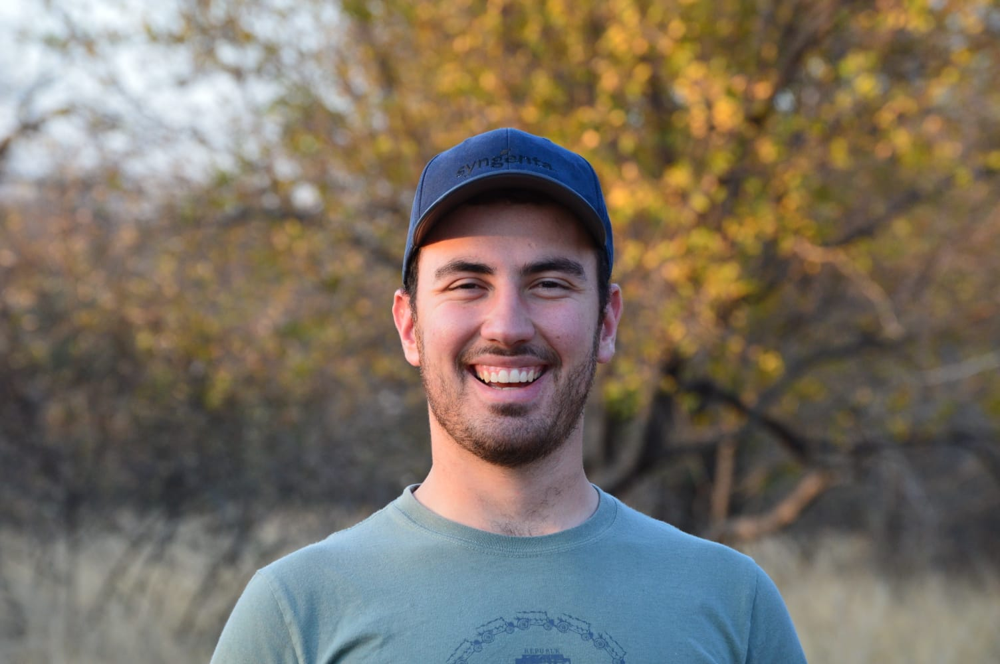
Marais Cloete
MSc Agric Candidate | UFS
Primary supervisor
Start: 2024
More about Marais
Marais Cloete is currently completing his MSc Agric in Plant Pathology under the supervision of Dr Rothmann. His research focuses on the use of remote sensing technologies and chlorine-based interventions for the management of Sclerotinia stem rot in soybean.
Michelle Rossi
MSc Candidate | UFS – Plantovita
Primary supervisor
Start: 2023
More about Michelle
Michelle Rossi is an MSc candidate under the supervision of Dr Rothmann, focusing on dry bean anthracnose (Colletotrichum spp.), specifically investigating race virulence and varietal reactions of dry bean cultivars in South Africa. She is employed as a Laboratory Technologist for Dry Beans at Plantovita.
Nomvula Moloi
MSc Agric Candidate | UFS
Primary supervisor
Start: 2024
More about Nomvula
Nomvula Moloi’s research focuses on the identification of grain sorghum fungal pathogens, with particular emphasis on in-field sampling of sorghum leaves and panicles, as well as morphological and molecular diagnostics. Her current work also explores the biochemical responses of sorghum to uncover underlying tolerance mechanisms to Exserohilum turcicum (leaf blight pathogen) under greenhouse conditions using controlled inoculum spraying methods. She contributes to the research group through field surveys, laboratory diagnostics, and collaborative research activities that support disease surveillance and sorghum improvement efforts.
Project Title: Fungal pathogen identification and biochemical responses in grain sorghum
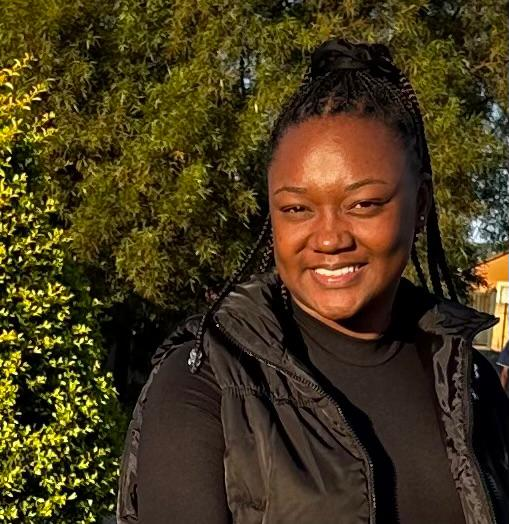
Tjitjila Makhura
MSc Agric Candidate | UFS – ARC GCI
Primary supervisor
Start: 2025
More about Tjitjila
Tjitjila Makhura is an MSc student at the Agricultural Research Council, Grain Crops, under the supervision of Dr Belinda Janse van Rensburg, and is registered at the University of the Free State under the supervision of Dr Rothmann. Her research focuses on Sclerotinia sclerotiorum and Agroathelia rolfsii in dry bean systems, including disease surveillance and cultivar screening for resistance.
Athinkosi Nongemane
MSc Agric Candidate | UFS – ARC GCI
Primary supervisor
Start: 2025
More about Athinkosi
Athinkosi Nogemane’s research focuses on the epidemiology, population variation, and mycotoxin risk of Alternaria species in sunflower grain and oil across multiple localities in South Africa. His work integrates multi-site field surveys, in-field inoculations, and classical and molecular diagnostics, including qPCR optimisation, PCR-RFLP, and phylogenetic analyses. Through field-based research and laboratory-based pathogen characterization, he contributes to disease surveillance and the development of improved management strategies to support sunflower crop protection and food safety.
Project Title: Determining the prevalence and variation of Alternaria spp. in Sunflower grain and concomitant mycotoxin production in the value chain
BSc Agric 4th Years & Honours Students

Nanelo Mzileni
BSc Agric – Plant Pathology
Start: 2026
More about Nanelo
Nanelo Mzileni is a BSc Agric student conducting his final-year research project on sunflower head rot caused by Sclerotinia. His work focuses on quantifying yield losses, assessing cultivar variation in response to infection, and evaluating the performance of in vitro fungicide treatments.

Ntuthuko Ngcobo
BSc Agric – Plant Pathology
Start: 2026
More about Ntuthuko
Ntuthuko Ngcobo is a BSc Agric student conducting his final-year research project on ergot of grain sorghum, focusing on the identification of the species involved and evaluating the performance of in vitro fungicide treatments.
Collaborators & Co-workers
Agricultural Research Council – Grain Crops Institute
- Dr Belinda Janse van Rensburg
- Annelie de Beer
- Ms Lucia Ndlala
- Dr Safia Ma’ali
- Lizette Bronkhorst
Brandon University
- Professor Bryan Cassone
Stellenbosch University
- Dr Diane Mostert
- Dr Lindy Rose
University of Pretoria – FABI
- Dr David Nsibo
University of the Free State
- Dr Chrisna Steyn
- Dr Mariette Jackson
- Dr Mpho Mafa
- Professor Adre Minnaar-Ontong
- Professor Andre Pelser
Western Cape Department of Agriculture
- Ms Lizette Nowers
Successful Graduates
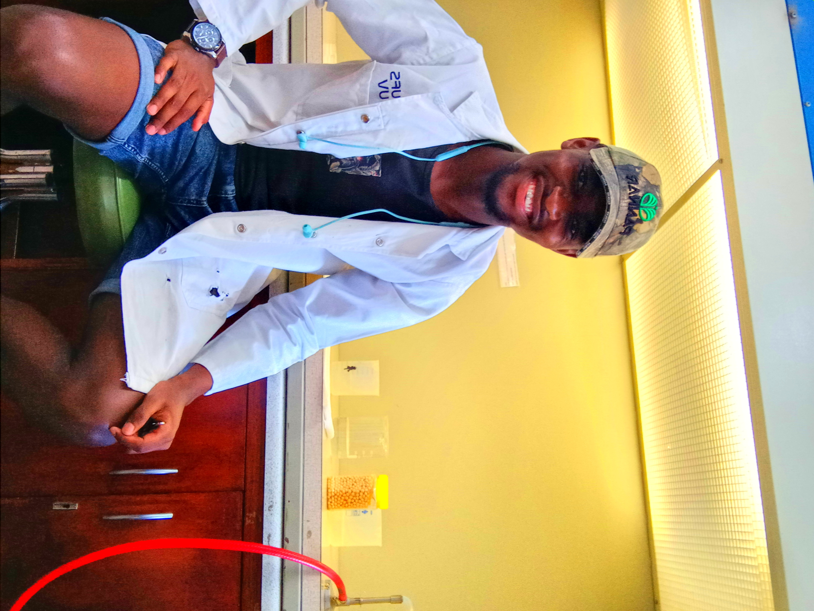
Neo Hlongwane
MSc Agric Plant Pathology
Graduated: 2024
More about Neo
Neo (Victor) Hlongwane is a successful MSc Agric graduate. He is currently employed at Barenbrug South Africa as a Coating Quality Controller within the Research and Development division, contributing to quality assurance and innovation in seed coating technologies.
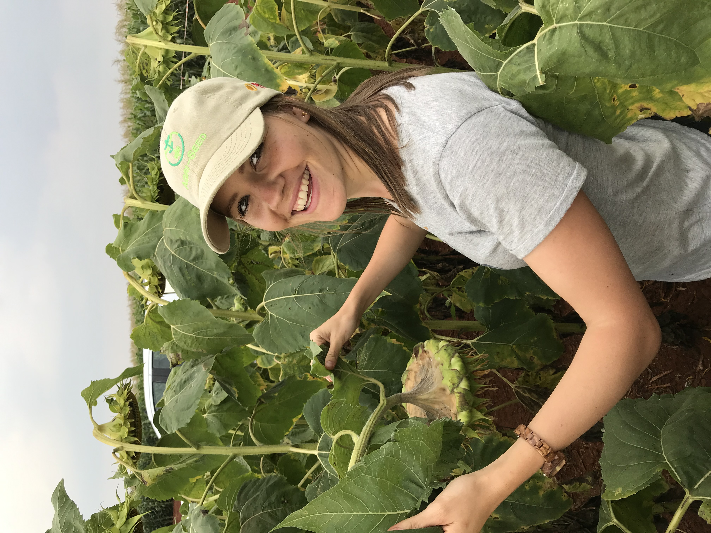
Marlese Meiring
PhD Plant Pathology
Graduated: 2022
More about Marlese
Marlese (Bester) Meiring completed both her MSc (cum laude) in Plant Health Ecology and her PhD in Plant Pathology, focusing on Sclerotinia sclerotiorum in sunflower and soybean systems. Her MSc research addressed inoculation techniques and evaluation methodologies for head and stem rot, while her PhD investigated disease potential and management responses in soybean and sunflower under the supervision of Dr Rothmann. She is currently employed as a QA Auditor at FARMOVS.

Thabiso Masisi
MSc Agric Plant Pathology
Graduated: 2018
More about Thabiso (MSc)
Thabiso Masisi completed his MSc Agric in Plant Pathology, where he investigated the effect of decortication on sorghum grain mould fungi and associated mycotoxins, co-supervised by Dr Mariette Jackson (Botany). He is currently pursuing his PhD, continuing his work in fungal ecology and mycotoxin research within grain systems.
Kwanele Sabela
MSc Agric | UFS
Graduated: 2025 (cum laude)
More about Kwanele (MSc)
Kwanele Sabela completed his MSc Agric in Plant Pathology Interdisciplinary Agronomy in 2025. His dissertation focused on
1) developing & validating a Standard Area Diagram (SAD) for Sclerotinia head rot, and
2) premature desiccation of at-risk sunflower crops.
Quantifying Sclerotinia head rot of sunflower
Past Staff
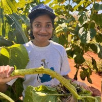
Shalya Moodley
Research Technician
Start: 2025
End: 2026
More about Shalya
Shalya Moodley was responsible for developing and refining the group’s diagnostic pipeline and standard operating procedures, maintaining the culture collection, and establishing identification protocols for Cercospora in soybean seed. She also contributed to general laboratory management and quality control, and is now pursuing her PhD in Sweden.

Mr Marais Cloete
Start: 2024
End: 2025
More about Marais
Marais Cloete was responsible for coordinating oilseed disease surveys for two years and overseeing field trial maintenance across sites, including inoculum preparation, field inoculations, and disease scoring. He contributed data to surveillance dashboards and assisted with progress reports and industry summaries, while also writing popular articles and supporting the translation of scientific findings for broader audiences. Marais regularly engaged with producers through farmer days and industry events, strengthening working relationships between the research group, industry partners, and the Agricultural Research Council.